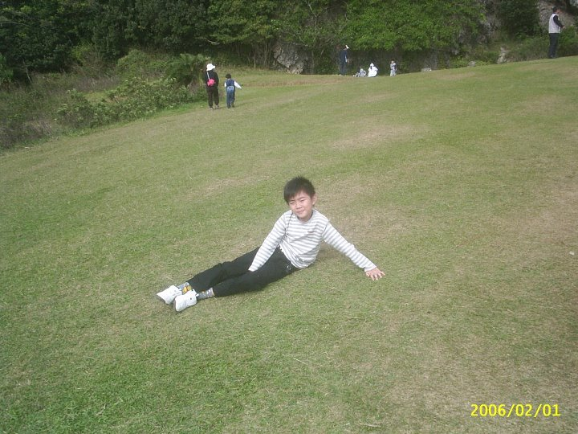
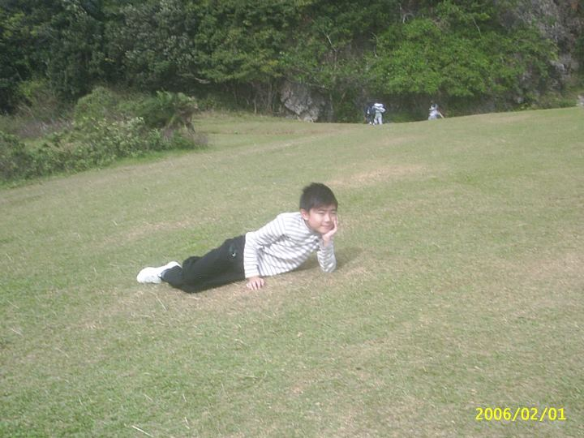
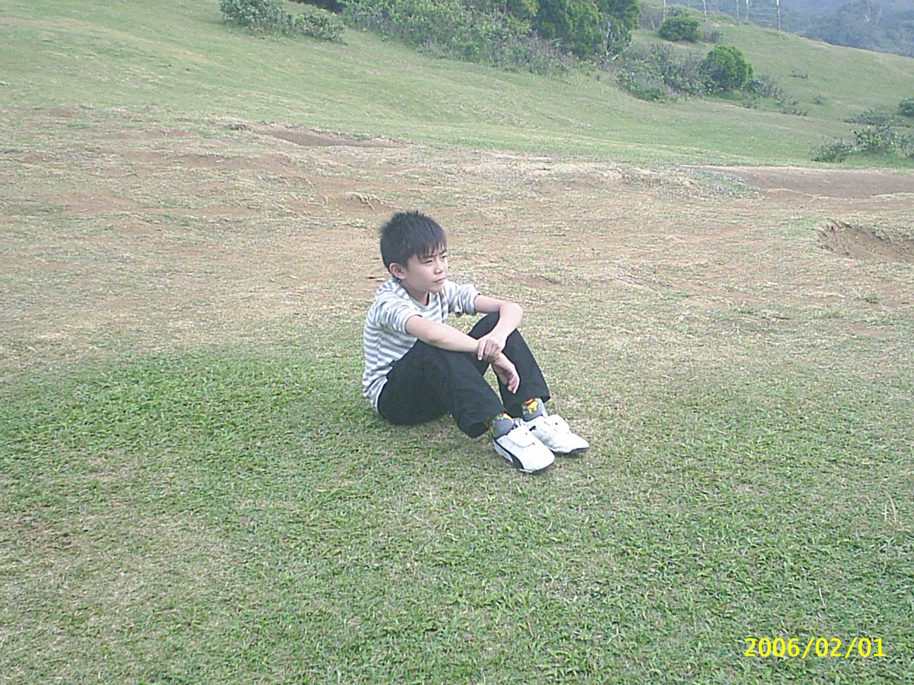
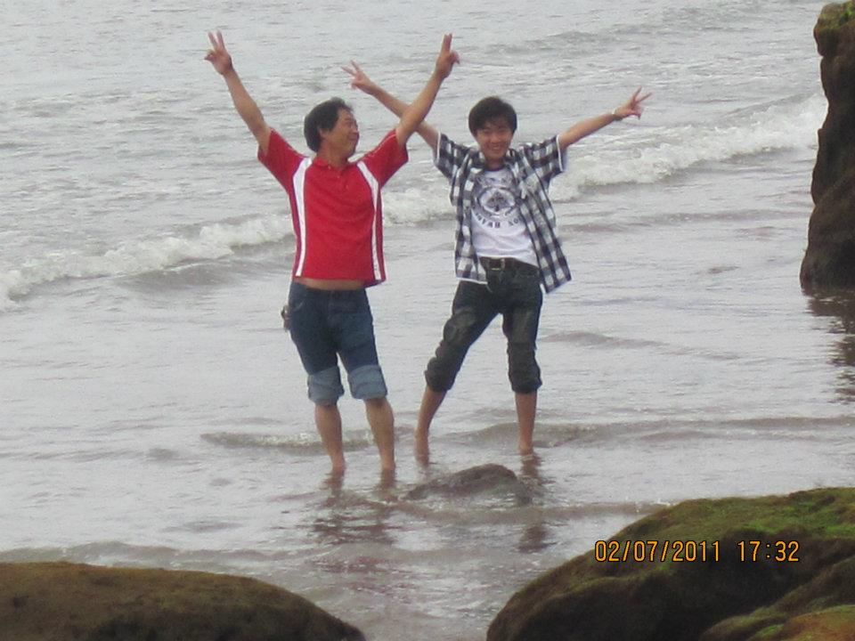
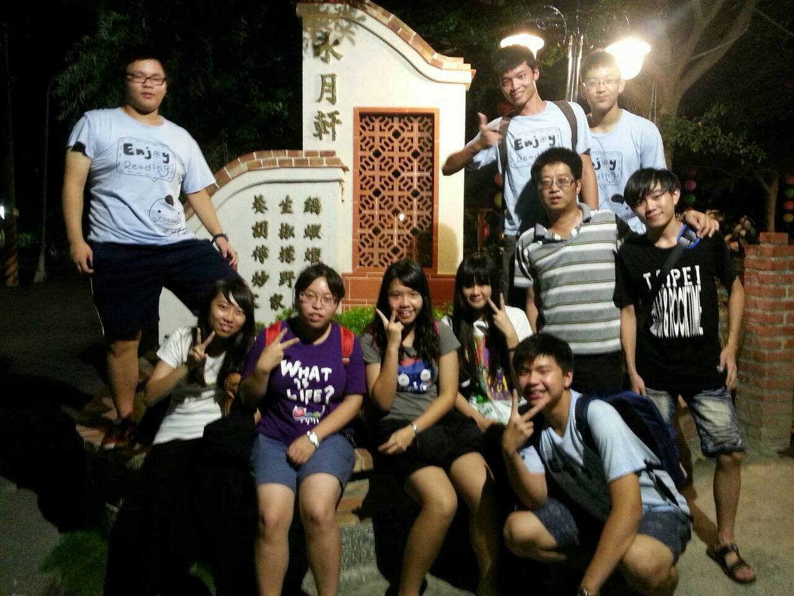

若是相愛， 即便是一天、一刻， 哪怕只是一瞬， 那也是一世，也會成為永恆。

你是這個秋天裡最後一絲遊離的秋風，而我恰是這秋天裡隨風飄落的最後一片楓葉！

所謂最難忘的，就是從來不曾想起，卻永遠也不會忘記。

我們再也回不去了！ 我們不可能再有一個童年；不可能再有一個初中；
不可能再有一個初戀；不可能再有從前的快樂、幸福、悲傷、痛苦。
昨天，前一秒，通通都不可能再回去。生命原來是一場無法回放的絕版電影。
所以要珍惜現在擁有的一切。
喜歡一個人沒有錯，錯就錯在喜歡一個不喜歡自己的人。
骨肉之間，多一分渾厚，便多留一分親情，是非上不必太明。

時光的流逝， 可以使人淡忘很多往事，但彼此間的愛意， 卻永遠都不會磨滅。

親情就是父親揚起的手掌，顫動的雙唇和恨鐵不成鋼的怒容；
親情就是母親灼灼的淚水，柔情的呼喚，和溫暖舒適的懷抱；
親情就是子女肯定的目光，尊敬的語言，和一份小小的禮物。
親情的船要靠在愛的港灣，親情的樓要建在愛的基石；
親情的泉要流在愛的大地，親情的星要亮在愛的蒼穹，親情的花要開在愛的園圃。

親情沒有隆重的形式，沒有華麗的包裝，它逶迤在生活的長卷中，
如水一樣浸滿每一個空隙，無色無味，無香無影，
于是也常常讓我們在擁有時習以為常，在享受時無動于衷。
親情是飯桌窗前的晏晏談笑，是柴米油鹽間的瑣碎細膩；
是滿懷愛意的一個眼神，是求全責備的一聲抱怨；
是離別后輾轉低回的牽掛，是重逢時相對無語的瞬間。